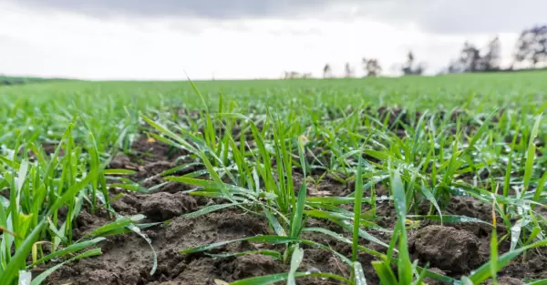
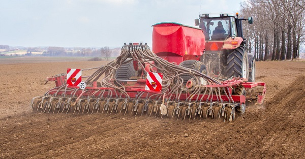

Beznakładowym czynnikiem agrotechnicznym mającym wpływ na plon i jakość ziarna jest termin siewu pszenicy.
Optymalny termin siewu pszenicy ozimej wg zaleceń IUNG (Instytutu Uprawy Nawożenia i Gleboznawstwa) to 15-25 IX w Polsce północno wschodniej, 20-30IX w
centralnej i 25-IX-5X w zachodniej. Optymalnym terminem siewu pszenicy jarej jest 15III-25 III w Polsce zachodniej,
20-30III – 10 IV w części centralnej i 25 III – 10 IV w części północno-wschodniej.
Bardzo ważnym czynnikiem wpływającym na plon jest też wysiew zaprawionego ziarna i zwalczanie chwastów jesienią.

